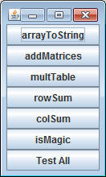

import sacco.*;
import sacco.testers.*;
|
Implementing an Interface For previous projects I've listed and described every method that I would like you to have in a program. In some cases it's so that my Runner programs would have methods to call. If you made a tiny problem in spelling, the method would compile, but then crash when run. This is because my program was written using specific method calls and if your method was any different it would not find the method. There is a better way to make sure that you write your methods with specific names and it involves implementing an Interface. What's an Interface? An Interface is a special type of class that givces an outline for required methods. There is no actual code, just a listing of method names with parameters and return types. For example: Consider the MatricesAndMagicSquares interface(DO NOT COPY THIS TO YOUR PROJECT): Notice that this is not a normal class, simply a list. public interface MatricesAndMagicSquares
{
public String arrayToString(int[][] arr);
public int[][] addMatrices(int[][]a, int[][]b);
public int[][] multTable(int numRows,int numCols);
public int rowSum(int[][] arr, int row);
public int colSum(int[][] arr, int col);
public boolean isMagic(int[][] square);
}
How to implement an Interface: When creating a new class, you have the option of implementing an interface. For this assignment, create a class with the following header: public class TwoDArrays implements MatricesAndMagicSquares If you've imported sacco.testers.*; and hit compile, the compiler will tell you that you're missing a method. Your job as the programmer who is implementing the interface is to make sure that the TwoDArrays class has every method that's listed in the interface. Once you have every single one, the class will compile. Why use an interface? We will learn more, but the short answer is compatibility. My Runner is written assuming that you have certain methods. Instead of hoping that you will have those methods, the compiler will make sure of it. |
Method Descriptions:
arrayToString: Since it's hard to print out arrays, this method will do the work for you. The purpose of this method is to take the parameter array and turn it into a String that will visually represent the array. This means tabs ("\t") after every element and new lines ("\n") after each row. Testing is difficult without a println. When testing, temporarily add a println that prints the String before it returns. If you pass in the parameter {{1,2,3,4},{5,6,7,8},{9,10,11,12}}, it should print out:
1 2 3 4 5 6 7 8 9 10 11 12
addMatrices: This method's job is to return a 2d array that represents the sum of the two parameter arrays. You may assume that they both have the same number of rows and columns. To add them together, create an array of the same size and each location will contain the sum of the corresponding locations in the two parameter arrays. For example: row 0 and col 0 of the returned array is the sum of the value at row 0 and col 0 of a and b.
multTable: This method's purpose is to generate a multiplication table with the given number of rows and columns. For example: for 4 rows and 5 columns, the returned int[][] would contain the following. Hint: The row and column at each location determines the value that goes there.
1 2 3 4
5
2 4 6 8
10
3 6 9 12 15
4 8 12 16 20
rowSum: This method looks at the parameter array and returns the sum of the values only in the given row
colSum: This method looks at the parameter array and returns the sum of the values only in the given column
isMagic: This method returns true if the given array is considered a "Magic Square". A Magic square is a square such that the sum of any row, any column, or either of the two main diagonals is the same. Use the methods that you've just created to help you.
Testing:
The MatrixTester class has several methods built in to help you test out your code, but to run them requires a little code on your end.
For example, assuming your class is named TwoDArrays:
public static void testAll()
{
TwoDArrays t = new TwoDArrays();
MatrixTester.launchTester(t);
}
When you run this method, a window of buttons should launch. Clicking each tester will check for errors. The testAll button will run every tester.
